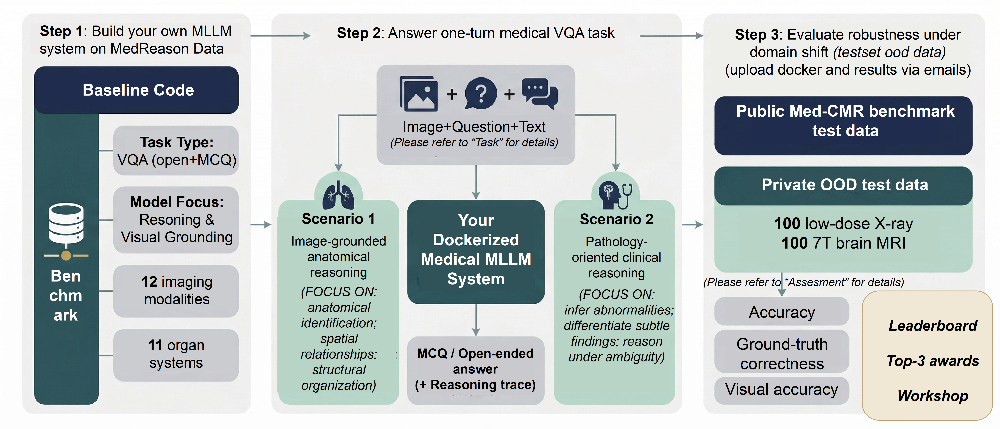
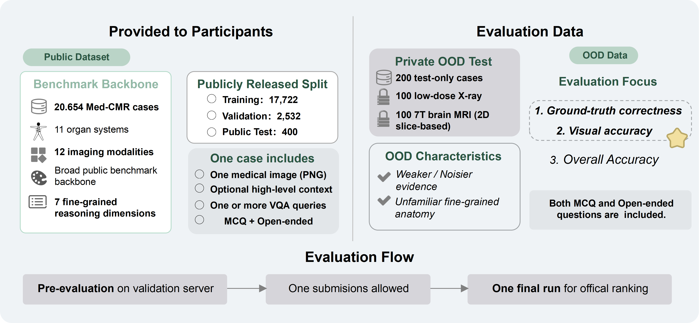
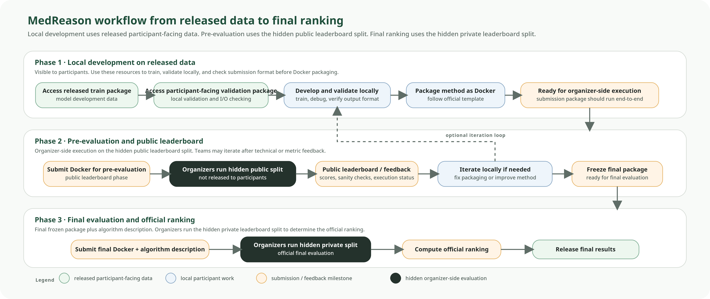

Overview
MedReason evaluates whether medical MLLM systems can perform clinically grounded visual question answering under domain shift. The challenge uses one medical VQA task, but it distinguishes between closed-ended accuracy and open-ended grounded reasoning.
- One challenge task: medical VQA with both multiple-choice and open-ended questions.
- Registration: a Synapse account and official challenge registration are required before you can access and download the released dataset packages. Official Synapse participation page here. Optional organizer-side Google Form registration: here.
- Data and tools: released participant-facing data are described on the Data Access page. Use of the released data is governed by the CC BY-NC 4.0 License. Example code: Github repository.
- Challenge status: final challenge submission closed on July 22, 2026. The final leaderboard is expected around August 16, 2026. Submission specifications remain available under Submission Resources.
- Publication opportunity: the optional archival paper track opens on August 8, 2026; submit through OpenReview by August 17, 2026, 11:59 PM Singapore Time.

Task
MedReason defines one medical visual question answering task. Each case contains a medical image, optional high-level context, and one or more questions. Depending on the question type, your system must return either one option or a reasoning trace plus a final answer.
Closed-ended questions
Your system returns a single multiple-choice option. This track evaluates whether the model can select the correct answer under the official option set.
Open-ended questions
Your system must return both reasoning_trace and answer. This is required because a plausible final answer may still be unsupported by image evidence, while the reasoning trace reveals whether the model remained visually grounded.
Image-grounded anatomical reasoning
Questions may involve anatomical identification, laterality, localization, spatial relationships, or structural interpretation directly grounded in the image.
Pathology-oriented clinical reasoning
Questions may involve abnormality interpretation, subtle finding differentiation, disease-oriented judgment, and reasoning under ambiguity.
Data
The public benchmark backbone is provided with public reference data available on Synapse. MedReason organizes released participant-facing resources for training and local development, while keeping leaderboard test sets hidden for organizer-side evaluation.
Open the MedReason public benchmark resources on Synapse →
| Split | Released to participants | Answers included | Main purpose |
|---|---|---|---|
| Train | Yes | Yes | Model development |
| Validation | Yes | No | Local development and pipeline checking |
| Public leaderboard test | No | No | One organizer-side pre-evaluation run and one equal-contribution component of the final ranking |
| Private leaderboard test | No | No | One equal-contribution component of the final official ranking |
How participants use the released data
Use the train split for model development. Use the participant-facing validation split for local validation, output-format checking, and debugging your inference pipeline before Docker packaging.
What remains organizer-side
The hidden public evaluation split is used for one organizer-side pre-evaluation run per team and also contributes equally with the hidden private evaluation split to the final official ranking.
Only want to download the dataset?
If you only want to access the released participant-facing dataset for research or local experiments and do not plan to join the official leaderboard, you can go directly to the Data Access page and the Synapse Datasets page. Official leaderboard participation is only required if you want organizer-side evaluation and ranking.
Workflow
The challenge process has three connected phases: local development on released data, one organizer-side pre-evaluation on the hidden public evaluation split before July 15, 2026, and final evaluation that combines the pre-evaluation data and hidden private test data with equal contribution.

Local development on released data
Participants access the released train and participant-facing validation packages, train the method locally, and verify that outputs are complete and correctly formatted.
Pre-evaluation (Once) on the hidden public split
Each team may receive one organizer-side pre-evaluation result. New teams may still submit for pre-evaluation before July 15, 2026, but each team has only one pre-evaluation opportunity. The result from this one run will be returned to the team and may also appear on the reference pre-evaluation leaderboard.
Final evaluation and equal-contribution ranking
After final submissions are frozen, organizers compute the final official ranking by combining results from the pre-evaluation data and the hidden private test data with equal contribution.
Evaluation & Assessment
Read this section from top to bottom. First understand the MCQ track. Then read the open-ended track. Finally, read how the open-ended case-level rubric scores become the official leaderboard metrics.
- MCQ track: submit one option; official metric = MCQ Accuracy.
- Open-ended track: submit
reasoning_traceandanswer; official metrics = Open-ended GT and Open-ended VA. - Open-ended scoring is organizer-side: a LLM-as-a-judge workflow assigns case-level scores and then averages them across the dataset.
MCQ evaluation
What you submit
For each closed-ended case, submit one multiple-choice option matching the official option format.
Official metric
MCQ Accuracy
How the metric is computed
- The submitted option is compared with the reference option.
- An exact match is counted as correct.
- Otherwise, the case is counted as incorrect.
Leaderboard value: mean accuracy over all closed-ended evaluation cases.
Open-ended evaluation
What you submit
reasoning_traceanswer
Both fields are required. A final answer alone is not sufficient for official open-ended evaluation.
Official metrics
Open-ended GT Ground-Truth Correctness
Open-ended VA Visual Accuracy
How the metrics are computed
Each open-ended case is scored organizer-side with a rubric-guided LLM-as-a-judge workflow.
- Ground-Truth Correctness (GT): evaluated using
Llama-3.1-70B-Instructin a text-only setting. - Visual Accuracy (VA): evaluated using
Qwen-2.5-VL, which jointly processes the image, question, and generated answer.
Both evaluators are used under controlled scoring protocols with fixed model versions, deterministic decoding parameters, and standardized prompts.
Leaderboard values: mean case-level GT_final and mean case-level VA_final over all open-ended evaluation cases.
How one open-ended case is scored
Case-level rubric scoring
For each open-ended case, the organizer-side judge assigns three 0–4 rubric scores.
Three internal rubric components
The three case-level components are Ground-Truth Correctness internal field: GT_final, Answer-level Visual Accuracy internal field: VA_answer, and Reasoning Visual Faithfulness internal field: RVF_trace.
Threshold-gated visual aggregation
Final Visual Accuracy internal field: VA_final is computed from VA_answer and RVF_trace. This means the reasoning trace can directly affect the final visual score.
Dataset-level leaderboard values
Open-ended GT is the mean of GT_final across open-ended cases. Open-ended VA is the mean of VA_final across open-ended cases.
Case-level rubric components
These 0–4 scores are assigned organizer-side evaluation judgding models for each open-ended case rating 0,1,2,3,4. They are not participant-submitted values.
Ground-Truth Correctness
internal field: GT_finalJudge input: question, reference answer, and submitted final answer.
What it measures: whether the final answer is medically and semantically aligned with the reference answer.
Answer-level Visual Accuracy
internal field: VA_answerJudge input: image, question, and submitted final answer.
What it measures: whether the key visual claims in the final answer are actually supported by the image.
Reasoning Visual Faithfulness
internal field: RVF_traceJudge input: image, question, and submitted reasoning trace.
What it measures: whether the reasoning trace remains faithful to image evidence through the key reasoning chain.
Final Visual Accuracy (VA_final) is derived from VA_answer and RVF_trace. This prevents an unfaithful reasoning trace from receiving a high final visual score.
- If the reasoning trace scores very low (RVF_trace ≤ 1), the final visual score is capped at 1 regardless of answer quality.
- If the reasoning trace is marginal (RVF_trace = 2), the final visual score is capped at 3.
- Otherwise, the final visual score equals the answer-level visual accuracy as-is.
Role of image caption
Image caption or visual description may be used as organizer-side auxiliary context or for difficult tie-break cases, but the primary basis for open-ended VA and RVF assessment is the raw image together with the question, reasoning trace, and final answer.
How “I don’t know” is handled
Suppose the image is low quality and the model answers: “I cannot confidently confirm a pleural effusion from this image alone.”
- This will usually not receive a high GT_final score if the reference answer contains a definite finding, because the final conclusion was not aligned.
- However, if the answer avoids hallucinated findings and the uncertainty is justified by the image, the case may still receive partial credit for VA_answer or RVF_trace.
Practical takeaway: strong open-ended performance requires both medical correctness and visual grounding. Overconfident answers can hurt VA, while overly frequent abstention can hurt GT.
What the official leaderboard shows
- Main displayed metrics: MCQ Accuracy, Open-ended GT, and Open-ended VA.
- Overall ranking: computed from the average of the per-metric ranks for the three official metrics, after combining the hidden public and hidden private evaluation datasets with equal contribution.
- Pre-evaluation: one organizer-side run per team on the hidden public/pre-evaluation split before July 15, 2026; the returned result is for technical verification and method feedback.
- Final official ranking: determined from both the hidden public and hidden private evaluation datasets, weighted equally.
Submission Resources
To submit your model to the MedReason challenge, you need to provide a Docker image package and a short model description. The hidden leaderboard test sets will not be released, so your method must run through the official container-based evaluation workflow.
Prepare the Docker package
Use the official Docker template from the GitHub repository. Follow the README carefully and verify that the container runs end-to-end locally under the official I/O contract.
Upload the archive to cloud storage
Export the final Docker container as a zipped archive and upload it to a cloud platform such as Google Drive, Mega, or WeTransfer.
Email the download link
Send the cloud link to medreason26@googlegroups.com with the subject line MedReason 2026 Submission [TEAMNAME] Docker Container Submission.
Submit the model description
In addition to the Docker submission, participants must submit a model description documents by July 22, 2026.
Use the following form: MedReason Model Description Submission Form
What organizers need together with the Docker link
- Team name
- Synapse username
- Method name
- Downloadable Docker package link
- Contact email
- Model description document (PDF format)